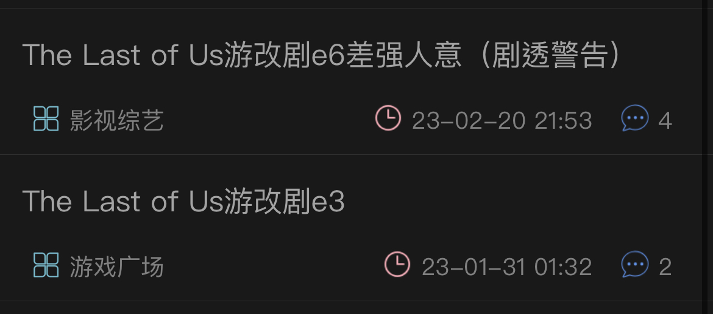

2024农历年
books
- ✔️ 《逃离中国》张伯笠
- ✔️ 《檀香刑》莫言
- 高密方言相当多——家什、缠磨、草鸡、乍煞、眼睛里杀得紧、撕拔撕拔、喷香、喝粘粥、“汗水已经溻透了他的脊背”、腚垂子、挤咕眼、“德国人横行霸道太强梁”、锅背的太监、脊背微锅、“小甲这个膘子”等等等等。说个无关的，最近看“用现代医学解释中医”时发现土话里表达“伤口溃烂”的“Fa Wu”居然对应中医的另一个词发物。
- 《明朝那些事儿》当年明月
- ✔️ 【朱元璋篇】
- 京师原来是首都（元大都）的意思，这才明白京师大学堂是“首都”大学堂
- 新版九部，等看完需要的就看1566剧
- ✔️ 【朱元璋篇】
- ✘ 骆玉明古诗词课
- 学了十几年诗，头一次真的进入诗歌，可能跟最近读了上面的书头一次融入历史有关
- ✔️ 《伊豆的舞女》川端康成
- ✔️ The Joy Of Mathematics《课堂上学不到的数学》
- 根号√￣来自radix的r
- 蒙蒂霍尔问题这种面试时的脑筋急转弯概率题在概率日常章节里有（这个很有意思，YouTube上比如Kai博士的视频想看没看）
- 开篇关于素数能否整除讲得很好，比如3或9只要被除数各位加起来=3或9就能整除；还有素数回文数之类刷题时常用的内容
- ✘ Jerusalem: The Biography《耶路撒冷三千年》
- ✘ The Code of Capital《财富背后的法律密码》
- 十来块钱买来，台湾的出版社
- ✘ 《置身事内》
- 也是讲义来的，图表和注释很丰富，值得研读
- ✘ 《乡土中国》费孝通
- 是他在西南联大和云南大学所讲“乡土社会学”时的上课内容，原来是在咱学校的课件，又刚读过莫言的乡土文学，这下不得不看了。“这里讲的乡土中国，并不是具体的中国社会的描绘，而是包含在具体的中国基层传统社会里的一种特具的体系，支配着生活的各个方面。”
- 《秦汉史》
- ✘ 吕思勉
- 秦✔️ 楚汉✔️ 汉✘
- 读起来很舒服，大篇幅引用史记
- ✘ 林剑鸣（跟孙皓晖一样是西北大学的）
- ✘ 吕思勉
- ✔️ 《中华人民共和国宪法》
- ✘ The Plague, Albert Camus
movies
- ✔️ 猛龙过江The Way of the Dragon
- 李小龙自编自导自演和武术指导
- ✔️ The Wicker Man 1973 柳条人/异教徒
- 不错的邪教/惊悚片
- ✔️ JFK刺杀肯尼迪1991
- 一个District Attorney地方检察官追查凶手的故事，因为不了解古巴危机的年代所以略感无聊，影片暗示CIA和FBI有牵连刺杀，美国反卡斯特罗的民意有些像今天反华禁TikTok
- ✔️ 大秦帝国之裂变
- 比老三国差一些，服化道不错，但故事有欠缺，比如人物脸谱化严重，很单薄，小说作者孙皓晖
- 认同这个差评，之后看大明1566或者东周列国春秋篇
- ✔️ 超级大国民
- 湾湾出品，楊孟軒推荐，关于白色恐怖被迫害的人，整部影片没几句台词，想到了The Shawshank Redemption那个自杀的老人
- ✔️ 2012
- 2009年？银灰色二手北京现代，
- ✔️ Ring午夜凶铃/七夜怪谈
- 贞子，跟去年看的美版差又不差
- ✔️ 你想活出怎样的人生
- 1937同名小说，宫崎骏新电影，改编自2017年改编漫画
- ✘ Four Lions
- ✘ 辐射美剧，可以跟辐射4一块儿
games
- ✔️ 星之卡比NS(wii Kirby's Return to Dream Land Deluxe)
- ✔️ Undertale
- worst gameplay(STG/shoot 'em up/shmup)
- best storytelling ever.
- ✘ witch on the holy night魔法使之夜，typemoon型月
- 下面的去年看的Fate/Stay Night也是型月的
- 朋友送的，反正是视觉小说，下饭看看
- ✘ Degrees of Separation森林冰火人
- 无聊
- ✘ Divinity: Original Sin II
- 原神启动，感谢女友送我的博德之门3
- 兄弟不爱玩回合制战斗，这也曾是我选择玩博德之门1/2而不是神界原罪的原因
- ✔️ Ken Follett's The Pillars Of The Earth圣殿春秋
- 极品历史小说，游戏改编得非常非常棒
- ✔️ The Escapist 2
- 有趣，但因为玩法重复没动力开新图
- ✘ Rome: Total War
- 想玩得十年了，上次尝试玩是半年多前（和骑砍，但骑砍和大航海时代这种贩子主线都有点玩不动）
- ✘ Fallout辐射4
2023农历年
一本书没看，但因为搞了NAS看了一堆电影。
- ✔️ 咒怨，跟女友一起拉着窗帘看不吓人，伽倻子和俊雄还成为了我俩的梗
- ✔️ 美版午夜凶铃Ring，看了录像带七天内都要死/拍照脸会糊，在井里冤死的从电视里爬出来的贞子
- ✔️ 危情十日Misery，女粉丝囚禁作家，惊悚
- ✔️ 鬼婆onibaba，影片以日本南北朝时期因战乱而出现南北两天皇为背景，以极少的人物出场展现了乱世之中人间更比地狱的惨状。一对婆媳以抢杀逃兵、买卖武器换取粮食为生，某日婆婆儿子的兵友逃了回来，告知婆媳二人男人已战死的消息。面对这个兵友的强壮，寡居多时的婆媳二人皆有心托付，自然年轻的媳妇获得了更多滋润，嫉妒心极强的婆婆试图带上抢来的鬼面具吓吓儿媳，却不料她带上的鬼面具真正属于恶鬼。
- ✔️ Ed Stafford First Man Out，第一集德爷跟海豹突击队美国大兵的精彩，其他一般
- ✔️ 高山下的花环
- ✔️ Pan's Labyrinth
- ✔️ Cure1997
- ✔️ The Exorcist 1973驱魔人，恐怖片，1949年发生在美国马里兰州的一桩真人真事。
- ✔️ Requiem for a Dream 2000 梦之安魂曲 关于吸毒的癫狂电影，最好的毒品电影
- ✔️ The Others 2001小岛惊魂，狗镇的主角安妮·海瑟薇，惊悚大片。非常棒，我看过的第一部以死后人视角看世界的电影，刚开始茫然，不知道自己在哪，抗拒想起死前的悲惨回忆，所谓冤魂就能完全被理解了。
- ✔️ The Spacewalker 2017 GER天际行者，很棒的一部俄式太空电影，前铺垫松后紧。很好看，人类第一次太空漫步，不是第一次载人航天。
- ✘ Liang and Lin梁思成·林徽因（全8集）含4集幕后花絮，水瓶很高的人物传记纪录片，记录建筑巨擘梁思成和林徽因的辉煌坎坷的一生，也记录了我国建筑史从无到有到辉煌的过程。https://movie.douban.com/review/9197383/#comments
- ✔️ E1梁启超和林长民，伟人，好奇所谓民国学究气浓厚的氛围。
- ✔️ E2美国康奈尔宾大艺术学院（现建筑设计学院）耶鲁等辗转读书，回东北大学创办第一个建筑学系，第一次带领中国人研究中国建筑。
- ✘ E3
- ✔️ Dogville 狗镇，2003，真的牛逼。
- ✔️ Carlito's Way 1993 卡利托的方式，阿尔·帕西诺，“一个意气将近的黑道老大，一个无法舍弃的女人，一段欲罢不能的江湖恩怨，一些无奈背叛的兄弟情义，一个狡诈阴险的律师朋友，一个陷阱，一条路，一笔钱，一把很少用到的手枪，一场无法挽回的人生，一种无能为力的命运，一个情理之中的故事” 很好看，阿尔帕西诺入木三分
- ✔️ Mayday/Air Crash，空中浩劫，空难细致调查看不下去
- ✔️ Emergency NYC 第一季2023，好看
- ✔️ War Horse2011战马，斯皮尔伯格， 好看
- ✔️ The American Barbecue Showdown S02 2023美食烧烤，好看
- ✔️ Full River Red 2023满江红，张艺谋，没说的。
- ✔️ Fate/stay night TV 01-24命运之夜 Reseed，还行，总算是看过了Fate
- ✔️ Suzume no Tojimari 2022铃芽之旅，还可以，新海誠太多了。
- ✔️ Fall 2022，俩女人攀岩极限运动，故事一般
- ✔️ DragonBall 99G，放弃
- ✔️ Barbie 2023
- ✔️ Django Unchained被解救的姜戈 2012
- ✔️ 2009 X战警前传：金刚狼
- ✔️ 变形金刚2007
- ✔️ Gandhi 1982甘地传，好看的
- ✔️ Hotel Mumbai，孟买酒店，1982，印度恐怖袭击，还不错，看完甘地传更能理解了
- ✔️ Passangers太空旅客2016，不好看
- ✔️ 丹下左膳余话·百万两之壶Sazen Tange and the Pot Worth a Million Ryo一个独眼男人的故事1935，看不下去，一个缺德兄长送给弟弟价值连城的遗物（乌龙故事）
- ✔️ 重启人生
- ✔️ the sixth sense第六感
- ✔️ Thelma and Louise很好看
- ✔️ 骆驼祥子
- ✔️ 跛豪
- ✔️ 春风沉醉的夜晚。
- ✔️ 蜘蛛侠平行宇宙12，第一次约会
- ✔️ 天注定
- ✔️ 时代革命
- ✔️ 年会不能停
- ✔️ 三大队
- ✔️ 古惑仔
- ✔️ 消失的她
- ✔️ 坚如磐石
- ✔️ 河边的错误，还有些很多去电影院看的电影，记不起来了
- ✔️ 金刚King Kong，我看过最好看的怪兽片
- ✔️ 孤注一掷，跟狂飙一样，太监扫黑
- ✔️ 狂飙
- ✔️ 奥本海默，造原子弹故事，相当好看
- ✔️ 长安三万里，李白故事
- ✔️ 天空之城，close约了看，讲了半天cinderella、snowwhite和mermaid，灰姑娘白雪公主美人鱼，不对劲儿
- ✔️ Monster (怪物)，校园霸凌 + 狩猎(Mads Mikkelsen)人言可畏误会老师 + 扭曲的友情，同一件事的多个视角很棒的电影
- ✘ stalingrad 1993 决战斯大林格勒，德国视角二战，比日本的硫磺岛家书更反思
- ✘ 0:30 猎杀本拉登2012
- ✘ Letters from Iwo Jima 2006硫磺岛家书，美国拍的日本二战，中途岛战役失利直接宣布了日军在太平洋战场上的失败，负隅顽抗的日军依然坚守日本最南端的小岛—硫磺岛。这个看似不起眼的小岛，却上演了二战太平洋上最惨烈的战争。
- ✘ Argo 2012 亚果出任务，伊朗人质，心灵捕手导演
- ✘ 战争与和平
- ✘ The Story of the Last Chrysanthemum 1939残菊物语，歌舞伎世家音羽屋第六代传人尾上菊之助，女人为男人献身
- ✘ Wings of Desire 1987 柏林苍穹下，柏林由两位天使守护着，一个是对人世疾苦冷眼旁观的卡西尔，另一个是常常感怀于人类疾苦的丹密尔。天使，德国新电影四杰
- ✘ Thunderbolt and Lightfoot 1974霹雳炮与飞毛腿，美国黑色喜剧，评价一般
- ✘ Les Miserables 2012悲惨世界，音乐剧电影版，高雅！
- ✘ The Train 1964战斗列车，故事时代背景是二次世界大战末期，德军眼看大势已去，深黯艺术无价的德国指挥官保罗．斯科菲尔德乃下令将一批法国名画从博物馆搬回德国去。巴黎解放前夕。法国战争片。
- ✘ 红色沙漠1964，Il deserto rosso，关键词“颜色”，意大利片，8.0，“天是紫色的，街是蓝色的，海是黑色的，烟是黄色的，在一片白雾中，走出一个红衣女人，心是灰色的”
- ✘ 大逃亡 The Great Escape (1963) 麦奎恩，逃狱片，据说笑点密集。
- ✘ 碧海蓝天 The Big Blue 1988，美丽的法国/意大利片，讲友谊、爱情、自然。
- ✘ Breathless 1960 筋疲力尽，法国犯罪片，戈达尔首部故事长片，把＂跳接＂这种手法从穿帮上升到了电影语言的领域。“其实都是逼出来的，因为胶片不够，所以只能这样．”？
- ✘ U-571猎杀，2000，战争片，还有BBC的《大西洋之战》，很过瘾。很多战斗细节是编的。1942年4月，二战期间，大西洋上，德军战舰采取“狼群”战术，令盟军损失惨重。S-33的任务是伪装成一艘德军的维修舰，以维修作掩护，从U-571上获取德国最先进的译码设备。
- ✘ In the Heat of the Night 1967炎热的夜晚，美国谋杀片，从容、慢节奏、戏剧张力
- ✘ The Good, the Bad and the Ugly 1966黄金三镖客，意大利Il buono, il brutto, il cattivo ，西部片宗师作品，过瘾，美刀三部曲之一，故事发生在美国南北战争时期。图科（埃里•瓦拉赫 Eli Wallach 饰）是一个图财害命的江洋大盗，因此他被镇上悬赏通缉。布兰迪（克林特•伊斯特伍德 Clint Eastwood 饰）是一个除暴安良的牛仔，他无意中抓住了图科，但嫌赏金不够又掳走了他。
- ✘ wonders of the solar system太阳系奇迹 / 太阳系奇观2010，BBC科普，豆瓣9.5，布赖恩考克斯教授游历地球上一些最令人惊奇的地点，向观众展示和剖析自然法则所造就的太阳系的伟大自然奇观。
- ✘ Time of the Gypsies 1988流浪者之歌，“一个不做梦的吉普赛人就好像没有屋顶的教堂或没有字的书。”一部献给吉普赛人的电影，魔幻的色彩，悲情的人生史诗，库斯图里卡的镜头下男孩成长与巴尔干文化记忆交融为一体，生命遂带着宿命而离奇的味道，漂流与等待、相聚和失散交错离析，在梦与现实、童年与世界的寻觅中碰撞，绚烂而刺痛。
- ✘ Gloria 1980女煞葛洛莉，惊悚、犯罪，美国，“用生活流的写实手法讲述一个极具戏剧性的故事，效果美妙，异常好看，比后来者《杀手莱昂》耐看。大概昆汀也从卡萨维茨的作品里汲取了不少创作灵感吧。”
- ✘ pulp fiction 1994低俗小说，昆汀，非线性，多角度，环。
- ✘ The Theory of Everything 2014 萝莉岛传奇霍金
- ✘ LIncoln林肯传2012
- ✘ The Life of Oharu 1952西鹤一代女，“日本物哀电影”？一个苦命妓女
- ✔️ 异种族风俗娘评鉴指南，好像是兄弟22年推荐我看的，记不清了
- ✔️ The Last of Us，前好后烂，演出不如游戏

2023年也玩了很多很多游戏，大部分认真玩的都写测评了，年终时又跟女友沉迷了自走棋。

旁白
写这个log时是2024-03-03，我们项目有13个人去毕业答辩了，而我还在看gggy直播。
搜了下我老板的导师评价发现是整个浙大计算机最低分...
Name:徐仁军
评星(满分5星) 学术水平:1 科研经费:1 师生关系:1 学生前途:1
导师辨识特征：浙大教师个人主页上没有这个人，办公地点一些隐私的地方，相貌堂堂，一表人才，动若豺狼，静如绵羊，很是崇拜，好词用不过来了
学术水平：一位在招人的老师应该有足以当通讯作者的能力
科研经费：经费蛮多的，但是你得了解是怎么分配的；项目很杂的，你可以投其所好；大力支持学生自主科研，然后采取下文“补助”方式以资鼓励
学生补助：硕博嘛，愿意给他做一作和通讯的给5k，然后会鼓励你再艰辛也要学习，经费不足，东拼西凑钱包掏空也会给你4k的
师生关系：实验室学生两三个，没有想留下的；挺关心学生的，不管多晚都愿意打电话来吵醒，不接还会继续打；导师一手遮天，事无巨细都是一人承包，论文作者有谁以及顺序都不轻易放过
学生前途：耗子尾汁呀
2023-05
Name:徐仁军
评星(满分5星) 学术水平:1 科研经费:1 师生关系:1 学生前途:1
导师辨识特征：数据科学研究中心导师，1404办公室，戴眼镜。
学术水平：学术水平几乎没有，除了博士期间的几篇论文，几乎没有论文。18年进入数据科学中心，之后抢了两篇A会的一作（可以查一下二作，没有这个人，因为他让别人匿名了），其余文章均为靠关系挂名。一直想抢组内学生的一作。五花八门地乱搞，一会要让猴子长翅膀，一会要发cns。
科研经费：到目前为止就是阿里的两个项目。没什么经费，他自己说没钱了。。。
学生补助：按学校标准。但存在拖欠的情况，一般会拖三个月左右。
师生关系：抢一作，和实验室学生关系很僵硬。组内的硕博都不喜欢这个老师
学生前途：可以去他规定的地方实习，钱都给他，然后按学校的补助要求发钱。硕士500，博士800.
2022-04
Name:徐仁军
评星(满分5星) 学术水平:1 科研经费:1 师生关系:1 学生前途:1
导师辨识特征：我的意思是
学术水平：我的意思是
科研经费：科研需要花钱吗？
师生关系：你这是老太太进被窝
学生前途：事到临头各自飞
2021-10
发现现行3.2.3版本(gitbook -V)不支持复选框- [x] - [ ]语法，从几年前开始开源版的gitbook就不再更新了，正在更新的是打包的服务。